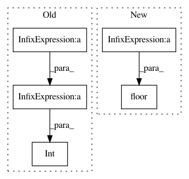

4cc818ed198714a2f77927657df9ebfe9a2af49e,chainercv/functions/ps_roi_average_align_2d.py,PSROIAverageAlign2D,backward_cpu,#PSROIAverageAlign2D#Any#Any#,357
Before Change
bin_size_w = 1. * roi_width / pooled_width
gh = np.floor(float(ph) * group_size / pooled_height)
gw = np.floor(float(pw) * group_size / pooled_width)
gh = int(min(max(gh, 0), group_size - 1))
gw = int(min(max(gw, 0), group_size - 1))
c = (ctop * group_size + gh) * group_size + gw
top_diff_this_bin = top_diff[n, ctop, ph, pw]
After Change
bin_size_h = roi_height / pooled_height
bin_size_w = roi_width / pooled_width
gh = int(np.floor(ph * group_size / pooled_height))
gw = int(np.floor(pw * group_size / pooled_width))
gh = min(max(gh, 0), group_size - 1)
gw = min(max(gw, 0), group_size - 1)
In pattern: SUPERPATTERN
Frequency: 3
Non-data size: 5
Instances
Project Name: chainer/chainercv
Commit Name: 4cc818ed198714a2f77927657df9ebfe9a2af49e
Time: 2019-02-18
Author: shingogo@hotmail.co.jp
File Name: chainercv/functions/ps_roi_average_align_2d.py
Class Name: PSROIAverageAlign2D
Method Name: backward_cpu
Project Name: chainer/chainercv
Commit Name: 4cc818ed198714a2f77927657df9ebfe9a2af49e
Time: 2019-02-18
Author: shingogo@hotmail.co.jp
File Name: chainercv/functions/ps_roi_average_align_2d.py
Class Name: PSROIAverageAlign2D
Method Name: forward_cpu
Project Name: chainer/chainercv
Commit Name: fe9b27b4e279a45a4aa16c3b289c4e600384b4da
Time: 2017-09-29
Author: yuyuniitani@gmail.com
File Name: tests/transforms_tests/image_tests/test_random_sized_crop.py
Class Name: TestRandomSizedCrop
Method Name: test_random_sized_crop